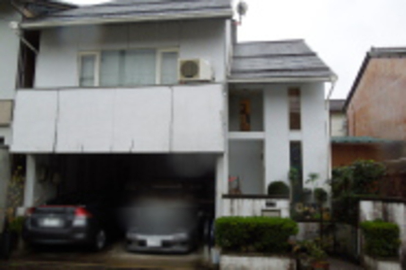
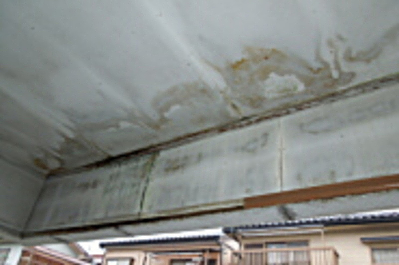
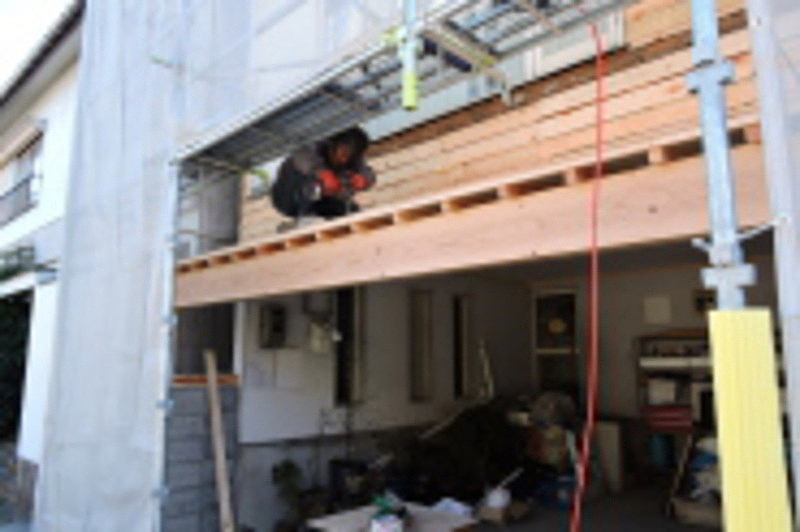
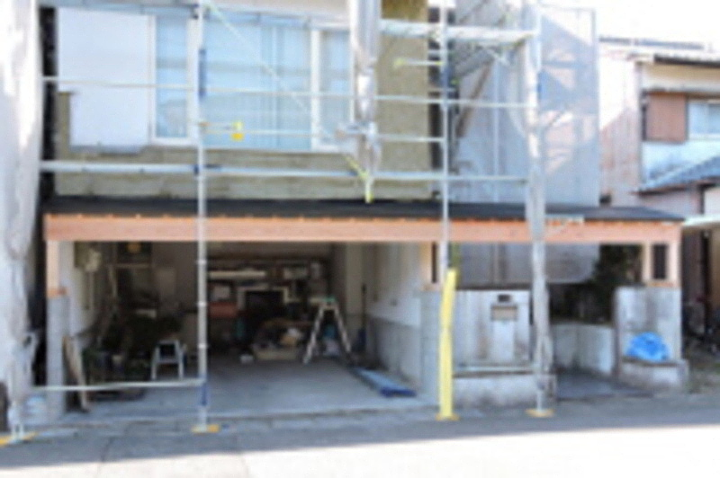
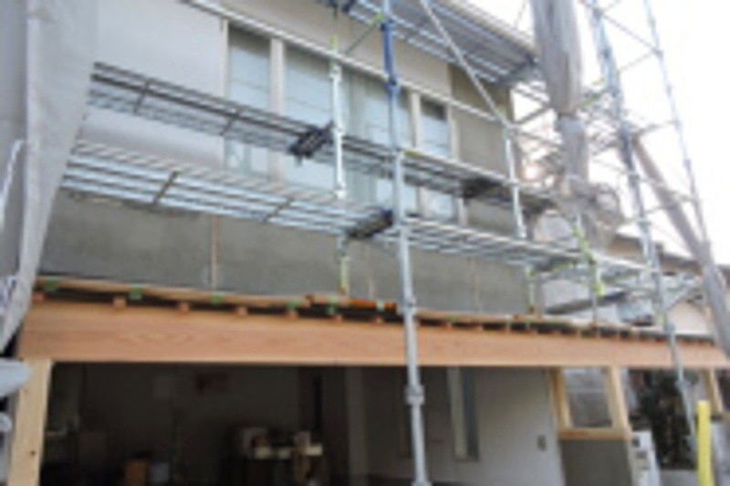
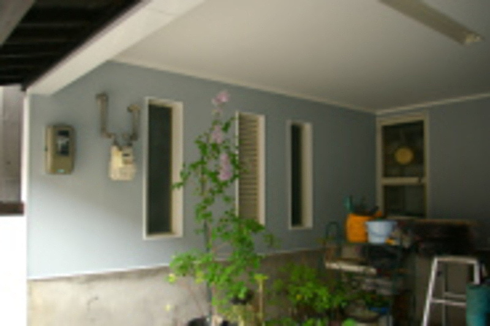
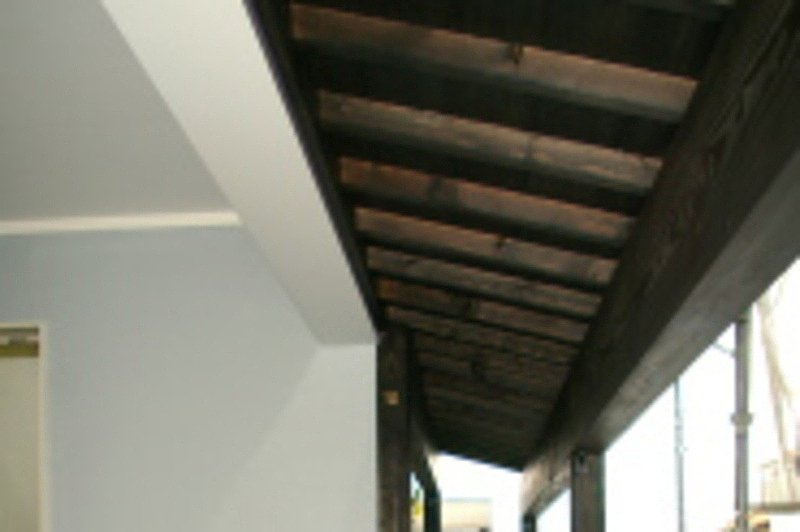
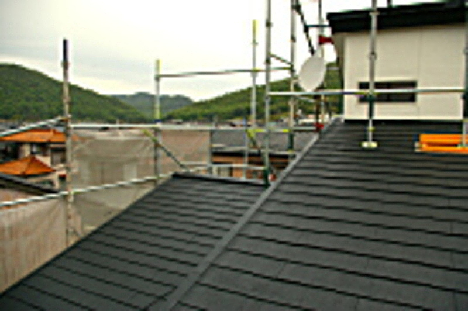
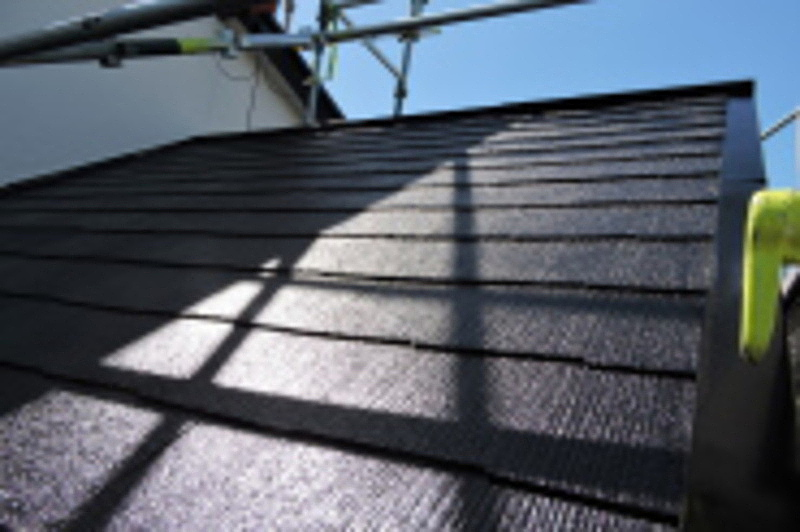

ホームメイドは内装クロス・外壁塗装・水回り・木部塗装補修工事・畳入替え・建具補修などの建築リフォーム工事を専門とする会社です。
TEL. 058-262-5694
〒500-8029 岐阜市東材木町37-2
施工手順の詳細PRODUCTS
M邸施工事例
◆ 現調 （Befor) ↓

○ 西側の外壁とベランダの痛みがひどいので、ベランダは撤去、西側の外壁は剥がして下地からやり直しをする大きな工事になりました。駐車場の天井もベランダの割れがひどく雨水が沁みている状態でした。
二階のベランダの撤去工事
◆ 構造材補強補修工事 ↓
○ 西側の外壁とベランダを撤去後、構造材の補強補修工事が必要になりました。雨水がベランダの割目から入り構造材もかなり腐食が進んでいました。外壁の塗装の前にシッカリと検査して補修致しますのでご安心ください。
構造材補強補修工事
◆ ベランダを撤去し、左官工事のための下地づくりと駐車場の天井の補修工事 ↓


○ 西側の外壁とベランダを撤去後、左官工事のための下地づくりからやり直しました。同時並行で、駐車場の天井も修復しました。玄関庇は新しく増築して、駐車場への雨水の入り込みを防ぎました。
駐車場天井の張り替え塗装工事 下地補修工事
◆ 左官補修工事 ↓


○ 下地づくりが完了、やっと左官工事ができるようになりました。見事に蘇る外壁に施主の方も大満足でした。駐車場の壁も綺麗なペパーミントブルーに仕上げました。この後に外壁の防水塗装工事が始まります。
左官仕上げ工事 内壁の塗装工事
◆ 玄関の庇と塀の防水塗装工事と板金工事 ↓

○ 板金工事は軽くて丈夫なガルバを使いました。木部の塗装も落ち着いた色合いに仕上げ外壁の白色にピッタリの土蔵仕上がりのような趣のある仕上がりになりました。
玄関庇改修工事
◆ 屋根防水塗装工事 ↓


○ 外壁防水塗装と屋根防水塗装で新築の姿が蘇ってきました。屋根に光沢が戻り、風格と品格のある佇まいになりました。
屋根防水塗装工事
◆ 外壁防水塗装工事完了（After） ↓

○ 外壁防水塗装の色は白で仕上げ土蔵造りのイメージが家全体を品のある美しさに仕上がりました。新築したばかりの姿が蘇ってきました。
外壁防水塗装工事
1 2 3 4 5 ← 完成写真
S邸外壁防水塗装工事詳細はこちら
バナースペース
ホームメイドで嬉しいリフォーム！
〒500-8029
岐阜市東材木町37-2
代表者 臼井常雄
TEL 058-262-5694
FAX 058-262-5689
携帯 090-8451-0238